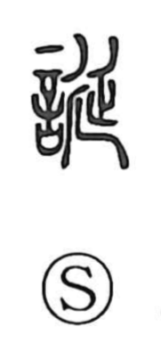

Explanation
誕 is a phono-semantic character: the left side 言 signals speech, while the right side 延 serves as the phonetic, yielding the reading tan and the sense of something extended or drawn out. In archaic usage, as noted in the Shuowen, it meant “many words”—speech spun out grandly or beyond the facts—hence the nuances of exaggeration and deceit seen in compounds like 虚誕 and 妄誕. Its connection with birth in modern compounds such as 誕生 and 生誕 does not stem from the original sense of the graph, but from the classical context of the Book of Odes (Major Odes, “Sheng Min”), where the line 誕彌厥月，先生如達 describes a woman whose months are fulfilled and who gives birth gently, “like a lamb.” From that revered verse, 誕 came to be used in expressions relating to birth.